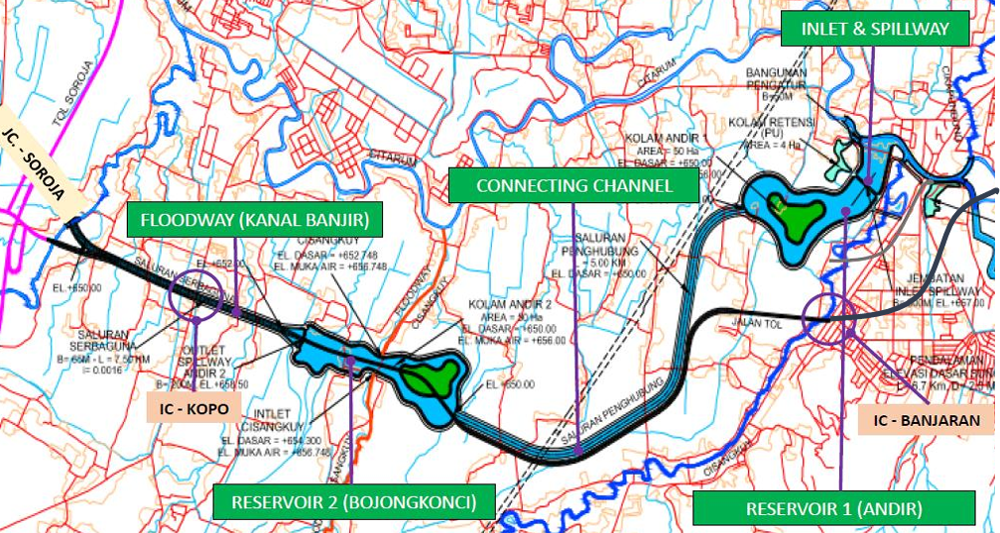
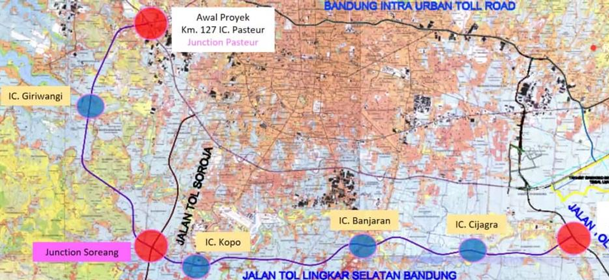
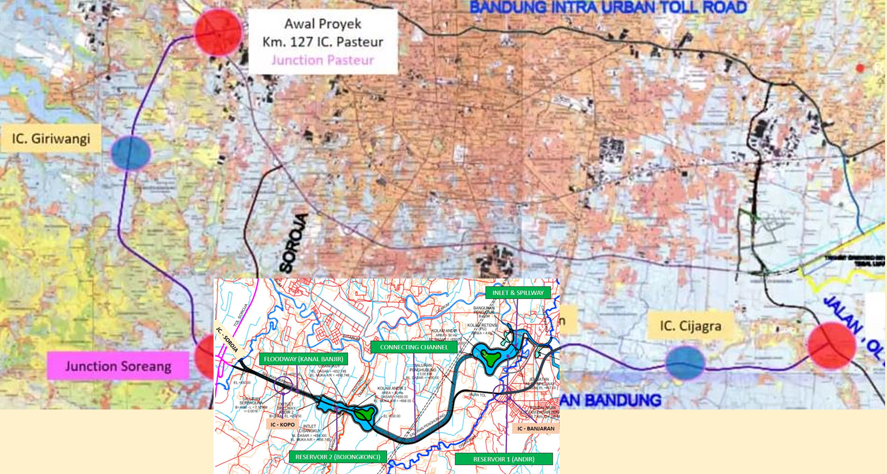
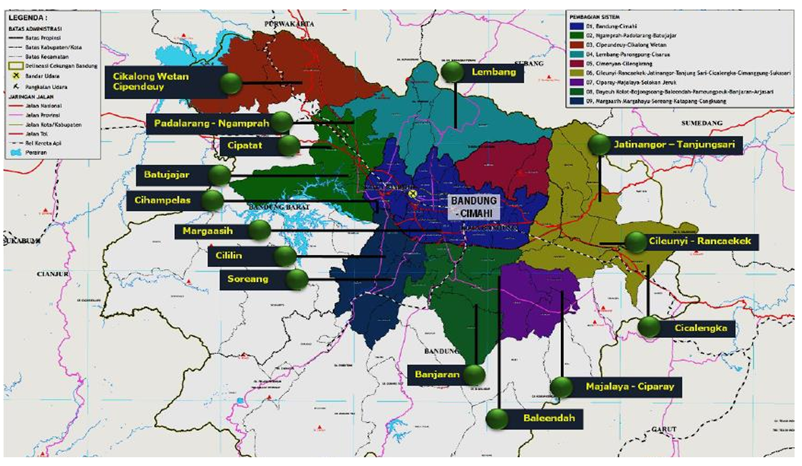
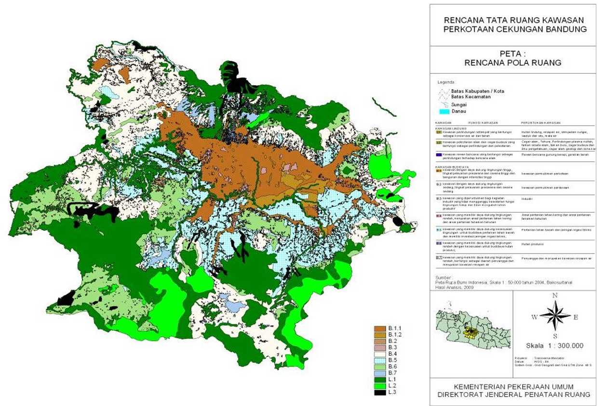

Prasarana Pengendali Banjir Bandung Selatan (PPBBS) yang akan
dibangun berupa kolam retensi dan kanal banjir yang bermula dari
pertemuan sungai Cikapundung dan sungai Cisangkuy yang bermuara di
sungai Citarum - kemudian mengalir menuju ke barat bersimpangan
dengan floodway Cisangkuy, dan terus menuju sungai Ciwidey dan
berujung di sana, yang selanjutnya mengalir kembali ke sungai
Citarum. The South Bandung Flood Control Infrastructure (PPBBS) to
be built consists of retention ponds and floodway channel starting
from the confluence of the Cikapundung and Cisangkuy rivers which
empties into the Citarum river - then heading west intersecting
the Cisangkuy floodway, and continuing towards the Ciwidey river,
which then flows back into the Citarum river. Lokasi proyek berada
di 3 kecamatan di kabupaten Bandung, meliputi kecamatan-kecamatan:
- Baleendah
- Pameungpeuk
- Katapang
PPBBS merupakan kombinasi dari upaya struktural pengurangan resiko
besaran banjir dengan membangun :
- Prasarana pengendali banjir:
- peningkatan kapasitas sungai tanggul
- pelimpah banjir
- bendungan
- Prasarana pengendali aliran permukaan:

Prasarana Pengendali Banjir Bandung Selatan (PPBBS) diintegrasikan
dengan Rencana Pengendalian Banjir Wilayah Sungai Citarum (Rencana
Pengelolaan Sumber Daya Air Wilayah Sungai Citarum) yang ada,
sehingga menjadi program yang terintegrasi.
Dengan infrastruktur ini daerah seluas
2,410 HA yang semula banjir, dapat direduksi
menjadi hanya 590 HA saja. Reduksi ini terbesar
terjadi di daerah
Baleendah, Dayeuhkolot dan Bojongsoang
Jalan Tol Lingkar Selatan Bandung
Di lokasi yang sama sedang digagas usulan proyek KPBU yaitu Jalan
Tol Lingkar Selatan Bandung (JTLSB), yang membentang dari
persimpangan Pasteur di Kotamadya Bandung sampai persimpangan
Majalaya - pertemuan dengan jalan tol Gedebage - Tasikmalaya -
Cilacap.
Jalan Tol ini direncanakan akan memiliki :
- Persimpangan : Pasteur, Soreang, Majalaya.
- Simpang Susun: Giriwangi, Kopo, Banjaran, Cijagra.

Dalam proses penyiapan usulan proyek ini, diusulkan agar proyek
ini dapat diintegrasikan dengan usulan proyek Prasarana
Pengendalian Banjir Bandung Selatan, dengan cara menyelaraskan
trase jalan tol berdampingan dengan kanal banjir PPBBS. Proyek
PPBBS akan makin optimal jika diintegrasikan dengan Jalan Tol
Lingkar Selatan Bandung (JTLSB) - dimana kanal banjir / floodway
PPBBS ditempatkan berdampingan dengan trase jalan tol tersebut,
sehingga membuat efisiensi dalam hal pengadaan tanah. Dengan
terbebaskannya Bandung Selatan dari banjir, dan dibangunnya jalan
tol yang meningkatkan aksesabilitas daerah tersebut, daerah
tersebut berpotensi untuk dikembangkan menjadi kawasan perkotaan
sebagai bagian dari Pengembangan
Kawasan Perkotaan Cekungan Bandung.
Integrasi PPBBS dengan JTLSB

Dengan proyek pengendali banjir PPBBS, kawasan
Bandung Selatan terutama Baleendah, Dayeuhkolot dan Bojongsoang
akan terbebas dari banjir, dan adanya jalan tol
JTLSB akan meningkatkan aksesabilitas daerah
tersebut. Daerah tersebut akan meningkat nilai ekonominya dan
berpotensi untuk dikembangkan menjadi kawasan perkotaan sebagai
bagian dari Pengembangan
Kawasan Perkotaan Cekungan Bandung.
Pengembangan Kawasan Perkotaan Cekungan Bandung
Dengan adanya prasarana pengendali banjir PPBBS, kawasan yang
sering/ rawan banjir di Bandung Selatan tereduksi secara
signifikan. Reduksi banjir terbesar terjadi di daerah Baleendah,
Dayeuhkolot dan Bojongsoang. Dengan terbebaskannya Bandung Selatan
dari banjir, daerah tersebut dapat dikembangkan menjadi kawasan
perkotaan (Urban Development ) sebagai bagian dari Pengembangan
Kawasan Perkotaan Cekungan Bandung.
Merujuk pada Peraturan Presiden Republik Indonesia No.45 Tahun
2018 - Tentang Rencana Tata Ruang Kawasan Perkotaan Cekungan
Bandung,Kawasan Perkotaan Cekungan Bandung merupakan kawasan
strategis nasional yang terdiri atas Kawasan Perkotaan Inti
(Bandung dan Cimahi) dan Kawasan Perkotaan di Sekitarnya yang
membentuk Kawasan Metropolitan. Pusat kegiatan di Kawasan
Perkotaan Inti sebagai pusat kegiatan utama dan pendorong
pengembangan Kawasan Perkotaan di Sekitarnya.

Pusat kegiatan di Kawasan Perkotaan di Sekitarnya sebagai
penyeimbang Kawasan Perkotaan Inti
Kawasan Perkotaan Baleendah-Dayeuhkolot-Bojongsoang, terdiri atas
:
- pusat pendidikan tinggi;
-
pusat perdagangan & jasa internasional, nasional, dan regional
- pusat kegiatan industri;
-
pusat pelayanan sistem angkutan umum penumpang dan angkutan
barang regional
- pusat kegiatan pertahanan dan keamanan negara
- pusat kegiatan pertanian
- pusat kegiatan pariwisata
Rencana Tata Ruang Perkotaan Cekungan Bandung

PENGEMBANGAN KWS PERKOTAAN BANDUNG SELATAN
Dengan terbebasnya kawasan banjir Bandung Selatan, terutama di
daerah Baleendah, Dayeuhkololot dan Bojongsoang, maka diusulkan
daerah ini dikembangkan menjadi Kawasan Perkotaan Bandung Selatan
- dimana untuk itu visioning masterplannya telah disiapkan.
Pengembangan kawasan ini dapat menjadi bagian dari pengembangan
Kawasan Perkotaan Cekungan Bandung, dengan penekanan pengembangan
sesuai dengan yang digariskan dalam Peraturan Presiden no. 45
tahun 2018 tentang Rencana Tata Ruang Kawasan Perkotaan Cekungan
Bandung. Pengembangan area yang sebelumnya terdampak banjir
merupakan sarana Land Value Capture, yang dapat menjadi sumber
pendanaan bagi pem-bangunan prasarana pengendali banjir yang
merupakan infrastruktur sosial.
Ada 2 instrument Land Value Capture yang dapat diterapkan :
- Pajak Properti, meliputi PPh, PPN dan PPnBM BPHTB dan PBB
-
Development charges/impact fees/developer exactions.
Pengembang menerima hak pengembangan sbg imbalan atas
kewajiban untuk memberi kompensasi tunai (atau menye diakan
barang) biaya bagian infrastruktur yg menguntung kan area
yang lebih luas.

Dengan terintegrasinya Prasarana Pengendali Banjir (PPBBS) dengan
Jalan Tol (JTLSB), dan Pengembangan Kawasan Perkotaan (Urban
Development ) akan mendorong terwujudnya rencana Pengembangan
Kawasan Perkotaan Cekungan Bandung.